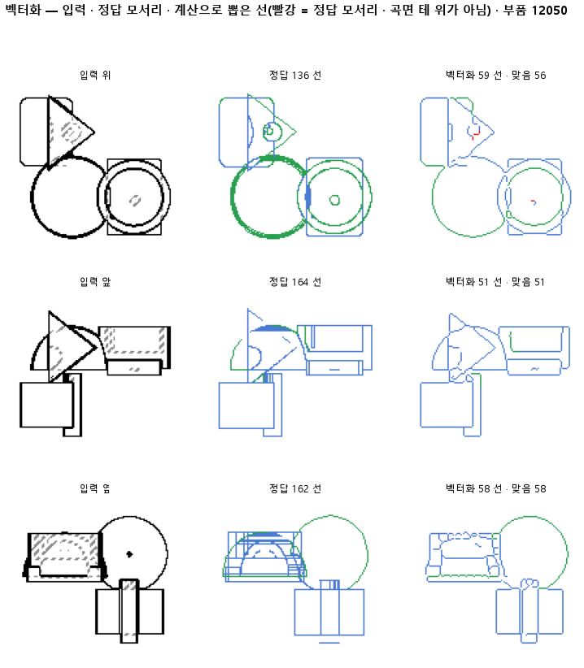

한 줄로
물음: 둥근 면의 윤곽선까지 정답에 넣고 다시 재면, 지금의 선 뽑기가 그 윤곽선을 찾고 종류까지 맞게 가를까?
답: 찾기는 한다. 윤곽선의 0.88을 찾았다. 하지만 찾은 윤곽선의 종류는 0.77만 맞아 목표 0.85에 못 미쳤다. 기준 넷 가운데 하나를 못 넘어 판정은 실패다.
왜 이 판을 했나
선 목록은 두 지도에서 뽑는다. 칠한 지도는 판 137 모델이 화소마다 선 종류를 찍은 것이다. 정답 지도는 부품 모양에서 바로 그린 것이다. 지금까지 정답 선은 CAD 모서리뿐이었다. 원통 옆면처럼 둥근 면이 앞쪽에서 뒤쪽으로 넘어가며 생기는 윤곽선은 정답에 없었다. 도면에는 이 선이 그려져 있다. 그래서 맞게 뽑은 윤곽선은 헛선으로 세거나 아예 세지 않았다. 143까지 세 판 연달아 정답 지도로 뽑아도 칠한 지도보다 나을 게 없었는데, 이 빈칸도 원인으로 의심했다.
바꾼 것 하나
정답에 곡면 윤곽선을 더했다. 입력과 선을 뽑는 계산은 143과 같다. 시험 부품 299개에서 윤곽선이 16,440개 나왔다.
결과

| 이 판 (144) | 대조 (143) | 목표 | 넘었나 | |
|---|---|---|---|---|
| 윤곽선 중 찾은 비율 | 0.88 | — | 0.80 | ✓ |
| 찾은 윤곽선의 종류가 맞음 | 0.77 | — | 0.85 | ✗ |
| 정답 선과 맞음 (F1) | 0.92 | 0.91 | 0.90 | ✓ |
| 정답 지도로 뽑았을 때 (F1) | 0.92 | 0.91 | 0.90 | ✓ |
| 정답 선 중 찾은 비율 | 0.85 | 0.84 | — | |
| 그린 선 중 맞은 비율 | 0.99 | 0.99 | — | |
| 선 종류 전체 | 0.85 | 0.87 | — | |
| 보이는 선의 종류 | 0.83 | 0.85 | — | |
| 한 선으로 뽑힌 모서리 | 0.76 | 0.75 | — |
143은 정답에 윤곽선이 없어서 윤곽선 칸을 잴 수 없다(—). 종류는 선이 직선인지 곡선인지 같은 모양 갈래이고, 보이는 선과 숨은선은 따로 센다. 「한 선으로」는 정답 모서리 하나가 토막 나지 않고 한 선으로 나온 비율이다. F1은 찾은 비율과 맞은 비율을 함께 본 점수로, 1이면 완벽하다.
왜 이렇게 나왔나
확인한 것
- 종류가 틀리는 건 칠한 지도 탓이 아니다. 정답 지도로 뽑아도 윤곽선 종류는 0.73으로, 칠한 지도의 0.77보다 오히려 낮다. 문제는 뽑은 선에 종류를 붙이는 계산에 있다.
- 선 종류 전체가 0.87에서 0.85로 내려간 것은 새로 넣은 윤곽선 몫이다. 윤곽선 종류가 0.77이라 평균을 깎았다.
- 정답 선이 늘었는데도 찾은 비율은 0.84에서 0.85로 올랐다. 윤곽선 대부분이 이미 뽑히고 있었다는 뜻이다.
짐작 (아직 확인 안 함)
- 보이는 선의 종류가 0.85에서 0.83으로 내려간 것은 윤곽선이 보이는 선으로 세어지기 때문일 것 같다.
- 정답의 종류는 도면에 보이는 모양으로 정했다. 원통 옆면의 윤곽선은 곧게 보이고, 구의 윤곽선은 원으로 보인다. 계산이 이 둘을 곡면에서 나왔다는 이유로 한데 묶어 틀렸을 수 있다.
- 그린 선 중 맞은 비율이 0.99 그대로다. 전에 헛선으로 세던 윤곽선은 많지 않았던 것 같다.
한계
- 시험 부품 299개로, 한 번만 돌렸다.
- 정답 지도와 칠한 지도의 F1이 이번에도 둘 다 0.92다. 정답을 고쳐도 그대로라서, 네 판째 그 까닭을 모른다.
- 윤곽선 종류를 어떤 종류와 헷갈렸는지는 세지 않았다.
배운 것과 다음
선 뽑기는 둥근 면의 윤곽선을 이미 거의 찾고 있었다. 모자란 건 찾기가 아니라 종류를 붙이는 계산이다. 정답 지도로 뽑아도 틀리니, 137 모델을 고쳐서 될 일이 아니다.
- 종류가 틀린 윤곽선을 그림으로 모으고, 어떤 종류로 붙었는지 센다.
- 윤곽선을 직선과 곡선으로 가르는 규칙이 맞는지 정답 지도에서 먼저 확인한다.
- 정답 지도와 칠한 지도의 F1이 왜 같은지 부품별로 나눠 본다.